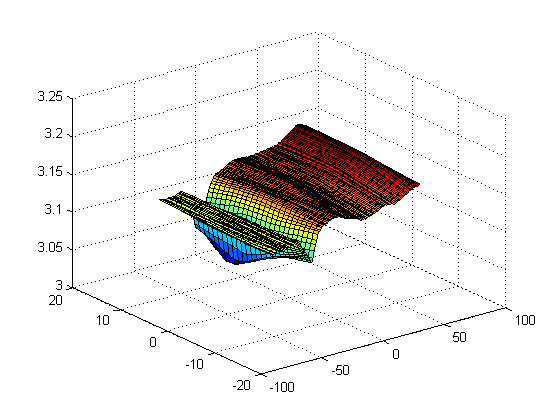
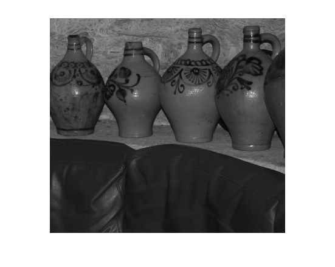
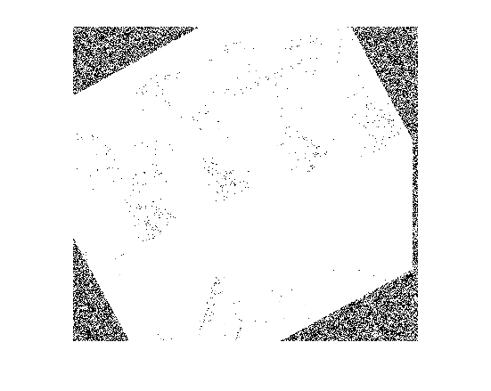
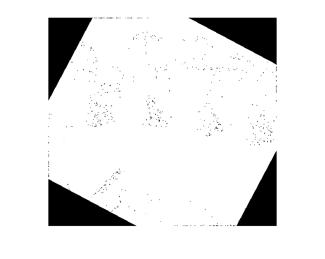

imNoFlash=imread('C:\Users\Tharun\Desktop\Acads\Lectures\4-2\CS 763\Assignments\CV\HW2\ImageReg\cave01_01_noflash.jpg');
imNoFlashDown=imNoFlash(1:2:end,1:2:end,:);
imFlash=imread('C:\Users\Tharun\Desktop\Acads\Lectures\4-2\CS 763\Assignments\CV\HW2\ImageReg\cave01_00_flash.jpg');
imFlashDown=imFlash(1:2:end,1:2:end,:);
imFlashDown=rgb2gray(imFlashDown);
imNoFlashDown=rgb2gray(imNoFlashDown);
imNoFlashDown=imrotate(imNoFlashDown,28.5,'nearest','crop');
nBins=10;
[m,n]=size(imNoFlashDown);
imMisAlign=translateX(imNoFlashDown,-6);
imMisAlign=imMisAlign+5*randn(m,n);
tx=-12:1:12;
theta=-60:1:60;
jEntr=zeros(length(tx),length(theta));
for i=1:length(tx)
for j=1:length(theta)
imTest=imrotate(imMisAlign,theta(j),'nearest','crop');
imTest=translateX(imTest,tx(i));
jEntr(i,j)=jointEntropy(imFlashDown,uint8(imTest),nBins);
end
end
[X,Y]=meshgrid(-60:1:60,-12:1:12);
surf(X,Y,jEntr)
[r,c]=find(jEntr==min(min(jEntr)));
sprintf('Estimated Re-aligning translation=%d',tx(r))
sprintf('Estimated Re-aligning rotation=%d',theta(c))
sprintf('Actual translation=%d',-6)
sprintf('Actual translation=%d',28.5)
sprintf('Notice that the estimated values are very close to actual values and inverted to compensate for misalignment')
imRecovered=imrotate(translateX(imMisAlign,tx(r)),theta(c),'nearest','crop');
figure,imshow(imFlashDown)
figure,imshow(imMisAlign)
figure,imshow(imRecovered)
ans =
Estimated Re-aligning translation=6
ans =
Estimated Re-aligning rotation=-28
ans =
Actual translation=-6
ans =
Actual translation=2.850000e+01
ans =
Notice that the estimated values are very close to actual values and inverted to compensate for misalignment
   